|
|
|


滚动轴承内部几何参数
你可以在 内部几何 选项卡中定义和编辑大多数轴承类型的内部几何数据。许多轴承制造商不会直接提供此数据。然而，在 KISSsoft 中，可使用 ISO/TS 16281 中规定的计算方法来估算此数据。
计算内部几何参数需要以下详细信息。对于某些滚动轴承，还可以输入用户定义的滚子型线定义文件，即一个 ".dat" 文件（参见「用户定义的滚子型线」章节）。
为更有效地处理没有内圈或外圈的轴承，这些型线可以单独或一起停用。但必须先定义内部几何参数，才能使用此功能。相应的内、外轴承直径 d 和 D 随后参照对应轴承壳体的（平均）工作节圆，必要时必须进行修改。因此，计算轴承游隙时会使用略微不同的参考直径。与带套圈的同型轴承相比，这可能导致可忽略的差异。如果轴承的一侧被定义为不带套圈，则轴系项目中使用的任何配合计算都将被停用。
承载能力修正系数（fC， fC0）用于调整承载能力，然后根据以下公式近似轴承几何参数：
C' = C • fC
C'0 = C0 • fC0
- 深沟球轴承（单列），四点接触球轴承： 球数 Z [-]， 球直径 DW [mm]， 分度圆直径 DPW [mm]， 承载侧挡边内径 DBI [mm]， 承载侧挡边外径 DBA [mm]， 内曲率半径 ri [mm]， 外曲率半径 ro [mm]
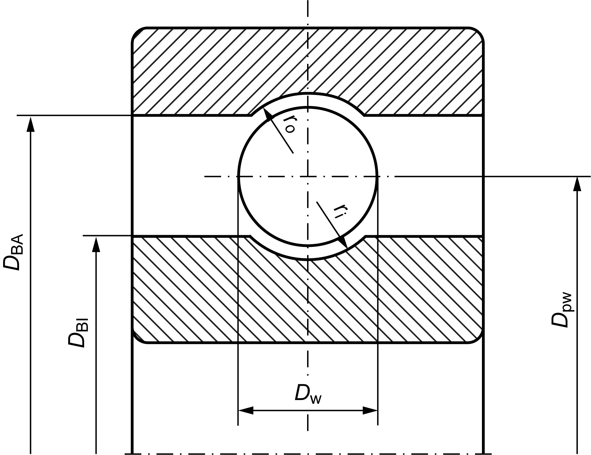
图 9.7: 单列深沟球轴承的尺寸
- 深沟球轴承，双列：与单列深沟球轴承相同几何参数值。附加输入：列间距 a [mm]
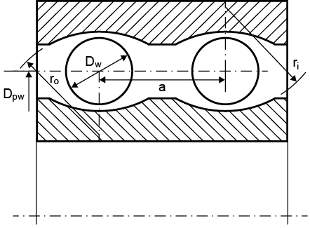
图 9.8: 双列深沟球轴承的尺寸
- 角接触球轴承（单列）：球数 Z [-]，球直径 DW [mm]，分度圆直径 DPW [mm]，承载侧挡边内径 DBI [mm]，承载侧挡边外径 DBA [mm]，内曲率半径 ri [mm]，外曲率半径 ro [mm]，最小初拉力 vmin [mm]，最大初拉力 vmax [mm]，最小预紧力 Fvmin [N]，最大预紧力 Fvmax [N]
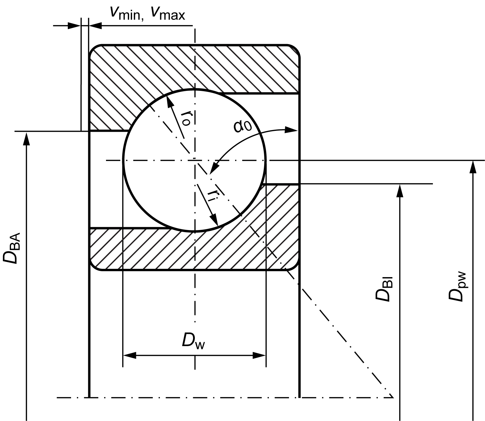
图 9.9: 角接触球轴承尺寸
- 圆柱滚子轴承（单列）：滚子数 Z [-]，滚子直径 DW [mm]，分度圆直径 DPW [mm]，承载侧挡边内径 DBI [mm]，承载侧挡边外径 DBA [mm]，滚子长度 LWE [mm]，浮动轴承的轴向位移量 vl [mm]，固定轴承的轴向位移量 vf [mm]
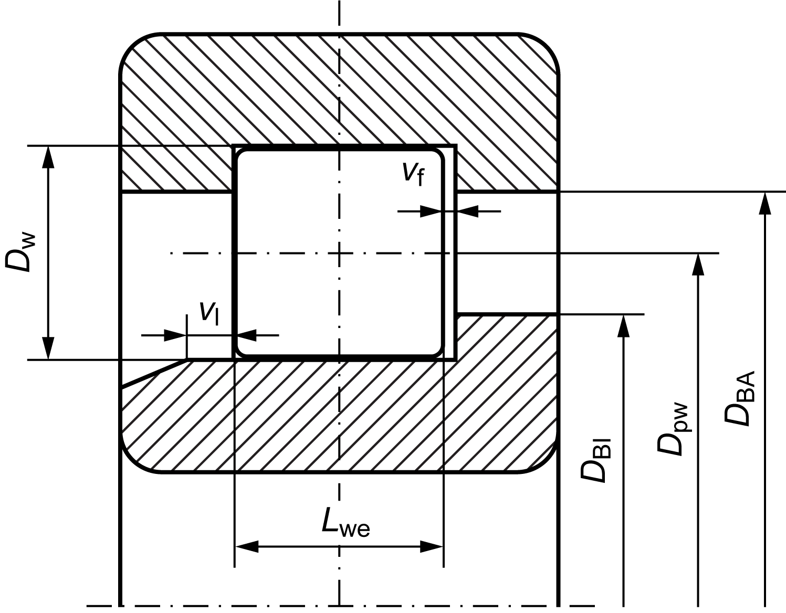
图 9.10: 圆柱滚子轴承尺寸
- 圆柱滚子轴承（双列）：滚子数 Z [-]，滚子直径 DW [mm]，分度圆直径 DPW [mm]，承载侧挡边内径 DBI [mm]，承载侧挡边外径 DBA [mm]，滚子长度 LWE [mm]，列间距 a [mm]
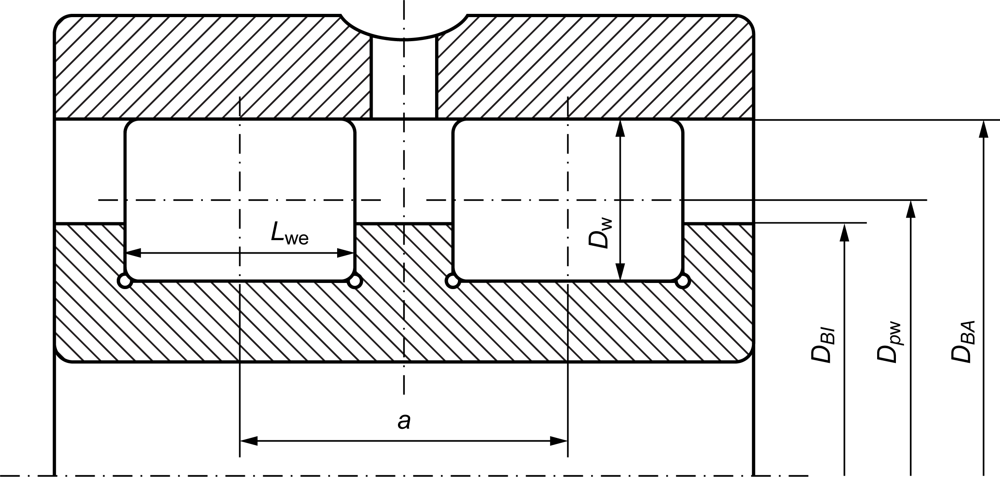
图 9.11: 双列圆柱滚子轴承的尺寸
- 推力角接触滚子轴承: 滚子数量 Z [-], 滚子直径 DW [mm], 分度圆直径 DPW [mm], 滚子长度 LWE [mm]
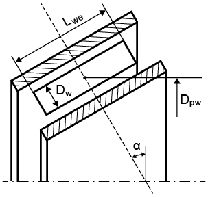
图 9.12: 推力角接触滚子轴承质量
- 圆锥滚子轴承 (单列): 滚子数量 Z [-], 滚子直径 DW [mm], 分度圆直径 DPW [mm], 滚子长度 LWE [mm]
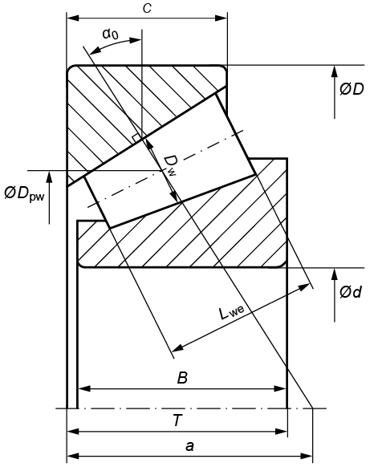
图 9.13：圆锥滚子轴承的尺寸
- 双列调心滚子轴承: 滚子数量 Z [-], 滚子直径 DW [mm], 分度圆直径 DPW [mm], 承载侧挡边内径 DBI [mm], 承载侧挡边外径 DBA [mm], 内曲率半径 ri [mm], 外曲率半径 ro [mm]
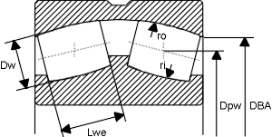
图 9.14：双列调心滚子轴承的尺寸
- 滚针轴承, 滚针保持架: 滚子数量 Z [-], 滚子直径 DW [mm], 分度圆直径 DPW [mm], 滚子长度 LWE [mm], 浮动轴承的轴向位移量 vl [mm]
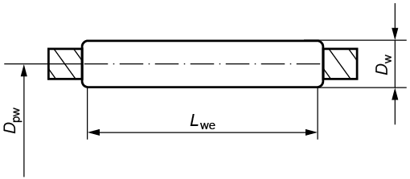
图 9.15：滚针轴承/滚针保持架的尺寸
- 推力深沟球轴承: 球数 Z [-], 球直径 DW [mm], 分度圆直径 DPW [mm], 内曲率半径 ri [mm], 外曲率半径 ro [mm]
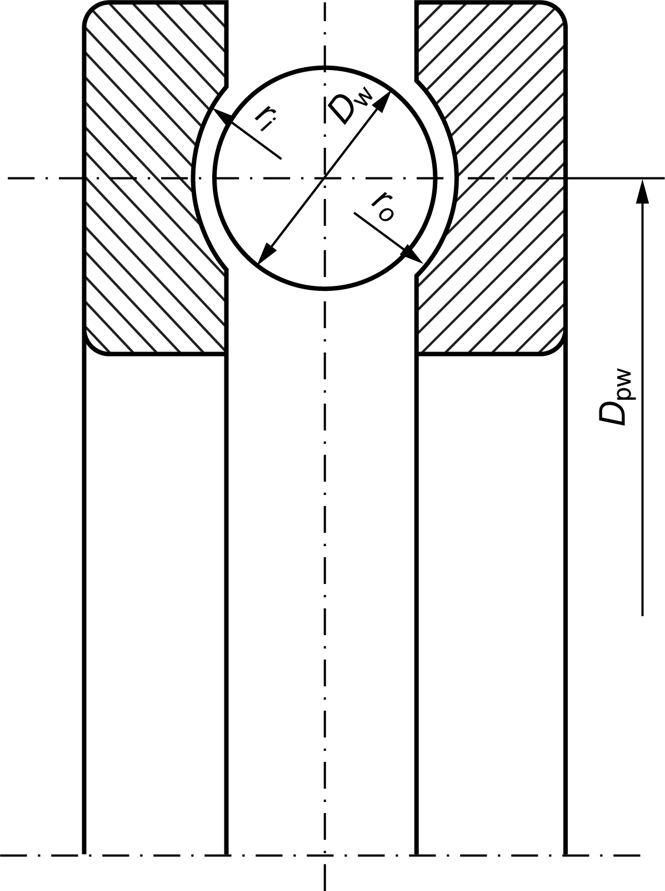
图 9.16: 推力深沟球轴承的尺寸
- 推力圆柱滚子轴承： 滚子数量 Z [-], 滚子直径 DW [mm], 分度圆直径 DPW [mm], 滚子长度 LWE [mm]
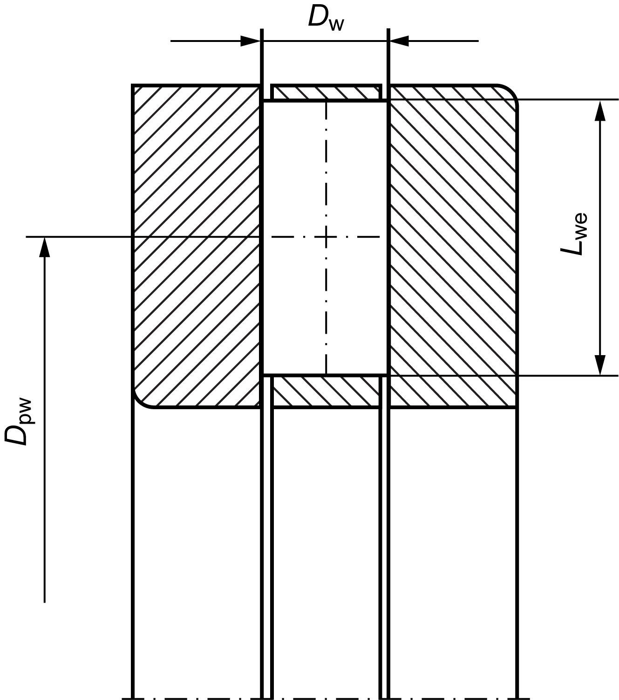
图 9.17：推力圆柱滚子轴承的尺寸
- 推力调心滚子轴承：滚子数量 Z [-]、滚子直径 DW [mm]、分度圆直径 DPW [mm]、滚子长度 LWE [mm]、最大滚子直径处的距离 LWC [mm]、内曲率半径 ri [mm]、滚子曲率半径 Rp [mm]、外曲率半径 ro [mm]
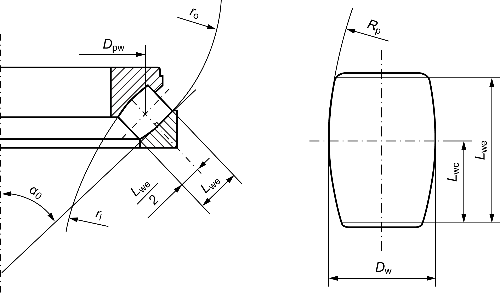
图 9.18：推力调心滚子轴承的尺寸
Rolling bearing Internal geometry
You can define and edit data for the internal geometry of most bearing types in the Internal geometry tab. Many bearing manufacturers do not make this data available directly. However, in KISSsoft, you can estimate this data by using the calculation methods specified in ISO/TS 16281.
You need the details documented below to calculate internal geometry. For some rolling bearings, you can also enter a user-defined roller profile definition file, which is a ".dat" file (see chapter User-defined roller profile).
To handle bearings without an inner or outer ring more effectively, these profiles can be deactivated either individually or together. However, you must define the internal geometry before you can use this function. The corresponding internal and external bearing diameters, d and D, then refer to the (average) operating pitch circle of the corresponding bearing housings and must be modified if necessary. A slightly different reference diameter is therefore used to calculate the bearing clearance. This might result in negligible differences when compared to the identical bearings with rings. If a bearing side is defined as being without a ring, any calculations of fit used in shaft projects are deactivated.
The load-bearing capacity correction factors (fC, fC0) are used to adjust the load-bearing capacity, which is used to approximate the bearing geometry according to:
C' = C • fC
C'0 = C0 • fC0
- Deep groove ball bearing (single row), four-point contact bearing: Number of balls Z [-], Ball diameter DW [mm], Reference diameter DPW [mm], Inside diameter of the rim, pressure side DBI [mm], Outside diameter of the rim, pressure side DBA [mm], Radius of curvature, inside ri [mm], Radius of curvature, outside ro [mm]
Figure 9.7: Dimensions of the deep groove ball bearing, single row
- Deep groove ball bearing, double row: Same geometry value as for single row deep groove ball bearings. Additional input: Row distance a [mm]
Figure 9.8: Figure: Dimensions of the deep groove ball bearing, double row
- Angular contact ball bearing (single row): Number of balls Z [-], Ball diameter DW [mm], Reference diameter DPW [mm], Inside diameter of the rim, pressure side DBI [mm], Outside diameter of the rim, pressure side DBA [mm], Radius of curvature, inside ri [mm], Radius of curvature, outside ro [mm], Minimum initial tension vmin [mm], Maximum initial tension vmax [mm], Minimum pretension force Fvmin [N], Maximum pretension force Fvmax [N]
Figure 9.9: Dimensions of the angular contact ball bearing
- Cylindrical roller bearing (single row): Number of rollers Z [-], Diameter of roller DW [mm], Reference diameter DPW [mm], Inside diameter of the rim, pressure side DBI [mm], Outside diameter of the rim, pressure side DBA [mm], Roller length LWE [mm], Axial displacement possibility non-locating bearing vl [mm], Axial displacement possibility fixed bearing vf [mm]
Figure 9.10: Dimensions of the cylindrical roller bearing
- Cylindrical roller bearing (double row): Number of rollers Z [-], Diameter of roller DW [mm], Reference diameter DPW [mm], Inside diameter of the rim, pressure side DBI [mm], Outside diameter of the rim, pressure side DBA [mm], Roller length LWE [mm], Row distance a [mm]
Figure 9.11: Dimensions of the double row cylindrical roller bearing
- Axial angular contact roller bearing: Number of rollers Z [-], Diameter of roller DW [mm], Reference diameter DPW [mm], Roller length LWE [mm]
Figure 9.12: Figure: Axial angular contact roller bearing mass
- Tapered roller bearing (single row): Number of rollers Z [-], Diameter of roller DW [mm], Reference diameter DPW [mm], Roller length LWE [mm]
Figure 9.13: Dimensions of the tapered roller bearing
- Double row self-aligning roller bearing: Number of rollers Z [-], Diameter of roller DW [mm], Reference diameter DPW [mm], Inside diameter of the rim, pressure side DBI [mm], Outside diameter of the rim, pressure side DBA [mm], Radius of curvature, inside ri [mm], Radius of curvature, outside ro [mm]
Figure 9.14: Dimensions of the double row self-aligning roller bearing
- Needle roller bearing, needle cage: Number of rollers Z [-], Diameter of roller DW [mm], Reference diameter DPW [mm], Roller length LWE [mm], Axial displacement possibility non-locating bearing vl [mm]
Figure 9.15: Dimensions of the needle roller bearing/needle cage
- Deep groove thrust ball bearing: Number of balls Z [-], Ball diameter DW [mm], Reference diameter DPW [mm], Radius of curvature, inside ri [mm], Radius of curvature, outside ro [mm]
Figure 9.16: Dimensions of the deep groove thrust ball bearing
- Cylindrical roller thrust bearing: Number of rollers Z [-], Diameter of roller DW [mm], Reference diameter DPW [mm], Roller length LWE [mm]
Figure 9.17: Dimensions of the cylindrical roller thrust bearing
- Spherical roller thrust bearing: Number of rollers Z [-], Diameter of roller DW [mm], Reference diameter DPW [mm], Roller length LWE [mm], Distance LWC of the maximum Roller diameter [mm], Radius of curvature, inside ri [mm], Radius of curvature, roller Rp [mm], Radius of curvature, outside ro [mm]
Figure 9.18: Dimensions of the spherical roller thrust bearing